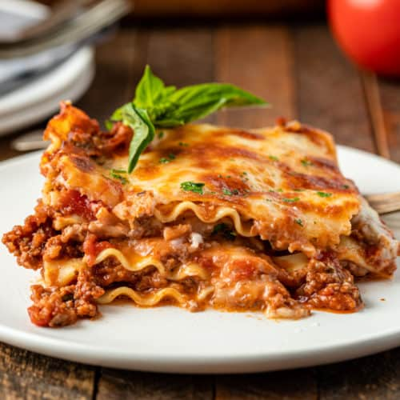

Lasagna

Description
Lasagna is a popular Italian dish made with flat sheets
of pasta layered over meats, sauce, vegetables, and
cheese. It is a dish that has existed since the Middle Ages
and still remains popular today. It's perfect for serving
groups both large and small and is easy enough to make. There
is a reason why it has survived the test of time. Taste it
and you will see why!
Ingredients
For The Sauce
- 1 cup extra virgin olive oil
- 2 medium red onions, finely diced
- 2 large cloves minced garlic
- 8 ounces pancetta, diced
- Salt and freshly ground black pepper
- 1 1/2 cups good red wine
- 2 28-ounce cans Italian plum tomatoes
- 3 tablespoons tomato paste
- 3/4 pound ground sirloin
- 1/4 cup freshly grated pecorino Romano
- 2 eggs
- 10 sprigs fresh parsley, leaves only, washed and dried
- 2 large whole cloves garlic
- 1/2 cup flour
- 1 pound Italian sausage, a mix of hot and sweet
For The Lasagna
- 1 15-ounce container ricotta cheese
- 2 extra-large eggs
- 2 cups freshly grated pecorino Romano
- 1/2 cup chopped parsley
- 1 pound mozzarella, grated
- 16 sheets fresh lasagna noodles
Steps
- For the sauce, heat ½ cup oil in a large heavy Dutch oven
or kettle over low heat. Add the onions, minced garlic and
pancetta, and cook, stirring, for 10 minutes, until the onions
are wilted. Season liberally with salt and pepper. Raise
heat slightly, add the wine and cook until it is mostly
reduced, about 20 minutes. Crush the tomatoes into the pan,
and add their juice. Add the tomato paste and 2 cups lukewarm
water. Simmer for 1 hour.
- Combine the sirloin, cheese and eggs in a large bowl. Chop the
parsley with the whole garlic until fine, then stir into the
beef mixture. Season lavishly with salt and pepper. Using your
hands, mix until all the ingredients are well blended. Shape
into meatballs and set aside.
- Heat the remaining oil in a large skillet over medium-high heat.
Dust the meatballs lightly with flour, shaking off excess, and
lay into the hot oil. Brown the meatballs on all sides (do not
cook through) and transfer to the sauce.
- In a clean skillet, brown the sausages over medium-high heat.
Transfer to the sauce. Simmer 1½ hours.
- Heat the oven to 350 degrees. In a large bowl, combine the
ricotta, eggs, pecorino Romano, parsley and all but 1 cup
of the mozzarella. Season well with salt and pepper. Mix
thoroughly.
- Remove the meatballs and sausage from the sauce, and set
aside to cool slightly, then chop coarsely. Spoon a thick
layer of sauce into the bottom of a 9-by-12-inch lasagna pan.
Cover with a layer of noodles. Spoon more sauce on top, then
add a third of the meat and a third of the cheese mixture.
Repeat for 2 more layers, using all the meat and cheese. Top
with a layer of noodles, and cover with the remaining sauce.
Sprinkle reserved mozzarella evenly over the top. Bake 30
minutes. Let stand 10 minutes before serving.